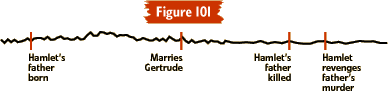

|
Imagining Backstoryby Kimberly Appelcline Few stories start at the beginning. As discussed in the first article in this series, The Elements of Good Storytelling, most stories start somewhere in the middle of events, when things have already gotten interesting, just when a crucial turning point approaches. And this means that a whole fictional world of events took place before page one of the story. "Backstory" is the history behind the story, the past behind the settings, characters, and events brought to life on the page. (For more information on how backstory relates specifically to each of these, see also the other articles in this series: Writing Dynamic Settings, Creating Vivid Characters, and the section on beginnings in Plot Strategies.) Sometimes explicitly explained, and other times only implied, backstory helps to create significant consequences (crucial to plot) and continues to accumulate right through the final scene. Hamlet as an Example of Backstory As one excellent example of the power of backstory, Shakespeare’s Hamlet begins with the appearance of the king’s ghost, but before this event many others took place: the king’s marriage to Gertrude, the birth of their son, wars and political intrigue, the king’s murder by his treacherous brother, and the seduction of the widowed Gertrude by her husband’s murderer, to name only a few! This extensive backstory crucially affects the events of the play itself, as Hamlet feels bound to revenge a murder that occurred before page one. Some of this backstory — for example, Hamlet’s loving relationship with his father — is only implied, but other events — such as the murder scene — are described explicitly through dialogue. If we were to graphically represent the greater fictional chronology into which the events of Shakespeare’s play fit, it might look something like this:  Hamlet’s avenging of his father’s murder is only a tiny moment in a longer story, a tiny blip in the timeline. When writing stories, you need to foster an awareness of the greater timeline, and not just the moment about which you are writing in your story. This is what gives stories a multi-dimensional quality, makes them seem "real." Ways to Communicate Backstory There are three primary ways to communicate backstory in your fiction:
You give information through narration when you actually write a scene, such as a flashback, that presents backstory events directly, complete with actions and dialogue. You also use narration when you write something like "Joe had always been a bully, even on the playground in first grade, and that hadn’t changed with the years." You give information through description when you communicate backstory to your readers more subtly, through characters’ physical characteristics (such as scars or bruises), objects in the setting (for example, lots of Chinese art and memorabilia in a living room might indicate that a character had travelled in that country), etc. Presenting backstory through dialogue means letting your characters reveal the past through their own speech within the story. For example, the ghost in Hamlet reveals backstory when he describes the circumstances of his murder in his plea for revenge. Darth Vader reveals backstory when he tells Luke Skywalker, "Luke, I am your father." Plays and films primarily use dialogue to reveal backstory — though they also frequently use description (through set design or costumes) or narration (through flashback scenes) — and text-based games generally rely on these methods in the same proportions. You should practice all three — and perhaps investigate how playwrights and film-makers have used them, too — since you may find them useful in different places in your writing. How Much Is Enough? Okay, so there’s backstory behind every setting, character, and event in your tale. And you can reveal it through narration, description, and dialogue. That’s a lot of backstory! So when do you have enough? How much backstory is too much? Well, to a certain extent, this is up to you, the writer. But if you let your story get bogged down in too much backstory, you will lose forward momentum in the plot of your tale, and your readers will become bored. They’ll put your story down and go outside to enjoy the sunny day. They’ll forget why they picked up your story in the first place. You’ll lose your audience’s attention, and that’s a storyteller’s fate worse than death! So you must keep the forward momentum of your story going. Flashbacks — those giant tangents of fiction — can mean disaster for plot momentum, so use them wisely and cautiously, and choose more subtle means of communicating backstory where possible. Often, if you have thought about the backstory behind your settings, characters, and plot events, that knowledge will subtly find its way into your writing without you consciously looking for ways to fit it in. So my primary advice to you is to look at how other writers use backstory (through narration, description, and dialogue) and practice imagining backstory (as described in the exercises below). And then just give it a try. Read, imagine, and write ... and have fun with it! Exercises:
ABOUT KIMBERLY APPELCLINE
|